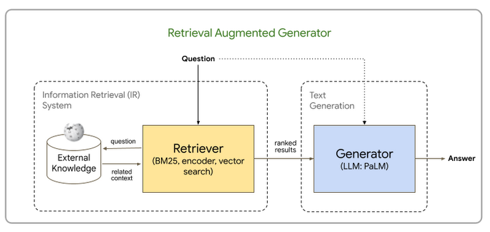

I've been reading more and more about LLM-based applications recently, itching to build something useful as a learning experience. In this post, I want to share a Retrieval Augmented Generation (RAG) system I've built in 100% Go and some insights I learned along the way.
Some limitations of current LLMs
Let's take OpenAI's API as an example; for your hard-earned dollars, it gives you access to powerful LLMs and related models. These LLMs have some limitations as a general knowledge system [1]:
- They have a training cutoff date somewhere in the past; recently, OpenAI moved the cutoff of their GPT models from 2021 to April 2023, but it's still not real-time.
- Even if LLMs develop more real-time training, they still only have access to public data. They aren't familiar with your internal documents, which you may want to use them on.
- You pay per token, which is about 3/4 of a word; there can be different pricing for input tokens and output tokens. The prices are low if you're only experimenting, but can grow fast if you're working at scale. This may limit how many tokens you want an LLM to crunch for you in each request.
Retrieval Augmented Generation
One of the most popular emerging techniques to address these limitations is Retrieval Augmented Generation (RAG). Here's a useful diagram borrowed from a GCP blog post:
The idea is:
- We want the LLM to "ingest" a large body of text it wasn't trained on, and then chat to it about it
- Even if the full body of text fits the LLM's context window, this may be too expensive for each query [2]
- Therefore, we'll run a separate information retrieval stage, finding the most relevant information for our query
- Finally, we'll add this information as the context for our query and chat with the LLM about it
The third step in the list above is the trickiest part - finding the most "relevant" information is difficult in the general case. Are we supposed to build a search engine? Well, that would be one approach! Powerful full-text search engines exist and could be helpful here, but there's a better way using embeddings. Read on to see how it works.
Implementing RAG in Go
In the course of my research on the subject, I wrote a bunch of Python code to perform RAG, and then ported it to Go. It was easier to find Python samples online, but once everything clicked in my head, porting to Go was trivial.
This process led me to the following observation:
LLM-based applications like RAG are a data-pipeline task, not a machine-learning task.
What I mean by this is that the application doesn't crunch matrices, doesn't explore the best loss function or gradient update, doesn't train and evaluate models. It simply hooks up textual tools together; LLMs are one such textual tool, embeddings are another. Therefore, Go is very well suited for such applications! Go is much faster than Python, just as capable with text processing, and its easy concurrency is helpful for applications that spend a long time waiting for network I/O.
The motivating problem
When I started hacking on this project, OpenAI models had a cutoff in 2021, but it remains relevant today. I wanted the LLM to answer questions about the Go documentation - including recently published pages. For example, Go shipped forward compatibility and toolchain management in 1.21 this summer. Asking ChatGPT about it yields sub-optimal results, because of the training cutoff:
Me: what does GOTOOLCHAIN mean in go?
ChatGPT: In Go, the GOTOOLCHAIN environment variable is used to specify an
alternative toolchain to be used for compiling and linking Go code. This can
be useful when you need to use tools that are different from the default ones
provided with the Go installation, such as gccgo or other experimental
toolchains.
This is a classical LLM hallucination, because ChatGPT is not familiar with the GOTOOLCHAIN env var released in Go 1.21; it's a plausible explanation of what such an env var could do in theory, but clearly not what I'm looking for.
Me: what is the latest released version of the Go programming language?
ChatGPT: As of my last update in April 2023, the latest stable version of Go
was 1.20. Please check the official Go website or the Go GitHub repository for
the most current version.
To address this, I wanted to build a RAG system that:
- Reads all the latest Go documentation pages (Markdown files straight from the Go website repository)
- When a question is asked, finds the most relevant information from these documentation pages
- This relevant information is added as context to the question via basic prompt engineering, and the question + context is passed to ChatGPT via its API
Let's get to it.
Step 1: ingest documentation
Step 1 is trivial and doesn't involve any LLM-related technology. It's a command-line tool that recursively walks a locally cloned _content directory of the Go website's source code, reads each Markdown file and splits it to "chunks" of approximately 1000 tokens [3], consisting of whole paragraphs. Each chunk is then stored in a SQLite DB with some additional information:
CREATE TABLE IF NOT EXISTS chunks (
id INTEGER PRIMARY KEY AUTOINCREMENT,
path TEXT,
nchunk INTEGER,
content TEXT
);
Step 2a: calculate embedding for each chunk
Embeddings are a fascinating aspect of modern ML and LLMs. I won't cover them in detail here - there are plenty of excellent resources online. For our needs - an embedding model is a function that takes arbitrary text and returns a fixed-size vector of real numbers that represents this text in vector space (N-dimensional Cartesian coordinates). Related chunks of text will be closer to each other in this space (using regular vector space distance metrics) than unrelated chunks.
For this step, a command-line tool with the --calculate flag will read the DB table created in step 1, calculate the embedding for each chunk using OpenAI's API, and store the embedding for each chunk in a new table:
CREATE TABLE IF NOT EXISTS embeddings (
id INTEGER PRIMARY KEY,
embedding BLOB
)
It's easy to correlate each chunk's text to its embedding by joining the tables on id.
This step takes a bit of time and costs a bit of $$$, because it sends an embedding API request to OpenAI for each chunk. The embeddings are stored in the DB as a cache, so we shouldn't have to compute them more than once.
Step 2b: find the most relevant context for a question
When a user asks a question - we can calculate the question's embedding, and use a bit of math to find the most relevant (closest in vector space) chunks to it from our DB collected in the previous step.
This is configurable, but my demo program finds the 3 closest chunks to the question (total of ~3K tokens).
Theoretically, this step requires a bit of engineering sophistication to efficiently find the closest chunks; a whole exciting domain of infrastructure called vector databases exists to address this need. Many of them are implemented in Go, e.g. milvus or weaviate.
Since our sample is small, I simply do this by iterating over all the chunks in the DB one by one, calculating the question's vector similarity with each one and keep the 3 chunks with best similarity.
Step 3: prompt engineering to answer the question with context
Now comes a small bit of prompt engineering, which is just a fancy name for string interpolation :-) This is the literal Go code doing this:
query := fmt.Sprintf(`Use the below information to answer the subsequent question.
Information:
%v
Question: %v`, contextInfo, theQuestion)
Where contextInfo is simply the 3 relevant chunks pasted together with some newlines. That's it!
Asking our question about GOTOOLCHAIN again using this approach, we get a much better answer:
In Go, `GOTOOLCHAIN` is an environment variable that determines which Go
toolchain version should be used. The value of `GOTOOLCHAIN` can be set to
various options:
1. `local`: This indicates that the bundled Go toolchain should be used.
2. `<name>`: This specifies a specific Go toolchain version that should
be used. If a binary with that name is found in the system PATH, it will be
used; otherwise, the `go` command will download and use the specified Go
toolchain.
3. `<name>+auto` or `<name>+path`: This tells the `go` command to
select and run a newer Go version as needed. It will consult the
`toolchain` and `go` lines in the current workspace's `go.work` file (or
the main module's `go.mod` file if there is no workspace) to determine
which toolchain version to use. If a newer version is specified in those
files, it will be used; otherwise, it will fallback to the default Go
toolchain.
Overall, `GOTOOLCHAIN` is used to specify the specific Go toolchain version or
the selection process of a newer Go version that should be used by the `go`
command.
Code and final words
The full code for this project is available on GitHub; all you need to run it is your own OPENAI_API_KEY. The repository includes the SQLite DB with the embeddings already pre-populated, so you don't even need to run the rag tool with --calculate. See the README file for full instructions.
Update (2024-01-03): the GitHub repository now includes a cmd/gemini-rag directory that reimplements this RAG tool using the Google Gemini model.
I'd like to thank Simon Willison, whose lucid writing on this subject has been very helpful in my research for this project. Specifically, the following resources were invaluable:
- Embeddings: What they are and why they matter
- Making Large Language Models work for you
- llm command-line tool
| [1] | LLMs have much more serious limitations, of course, w.r.t. factfulness and hallucinations. This list is focused on the topic of our specific example and isn't a general review of LLMs. |
| [2] | Let's take OpenAI's newly announced GPT 4 Turbo, for example. It has a whopping 128K token context window and costs 1 cent per 1K tokens. If we use the full context for the input (ignoring for the moment output tokens, which are more expensive), that's $1.28 per query. Not for the faint of heart, if you want this to run at scale! |
| [3] | Tokens are counted using the Go port of OpenAI's tiktoken library. |